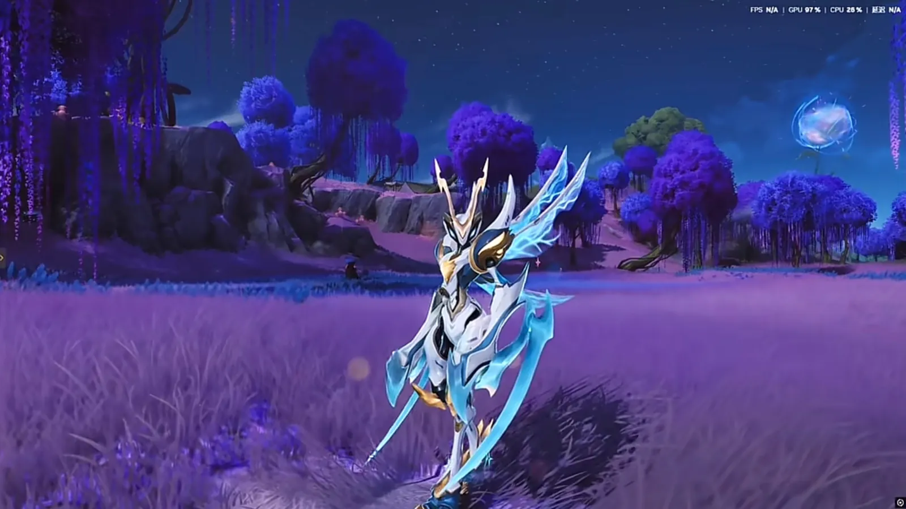
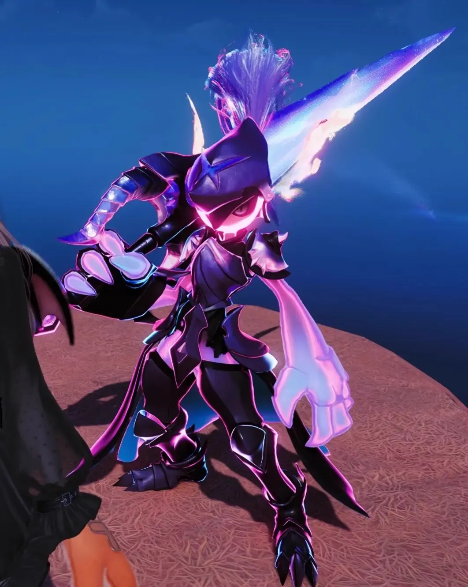
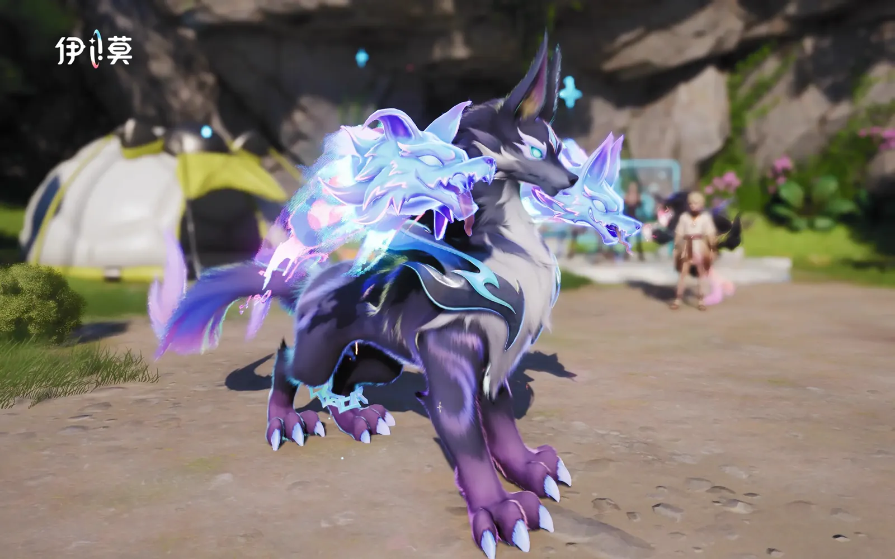
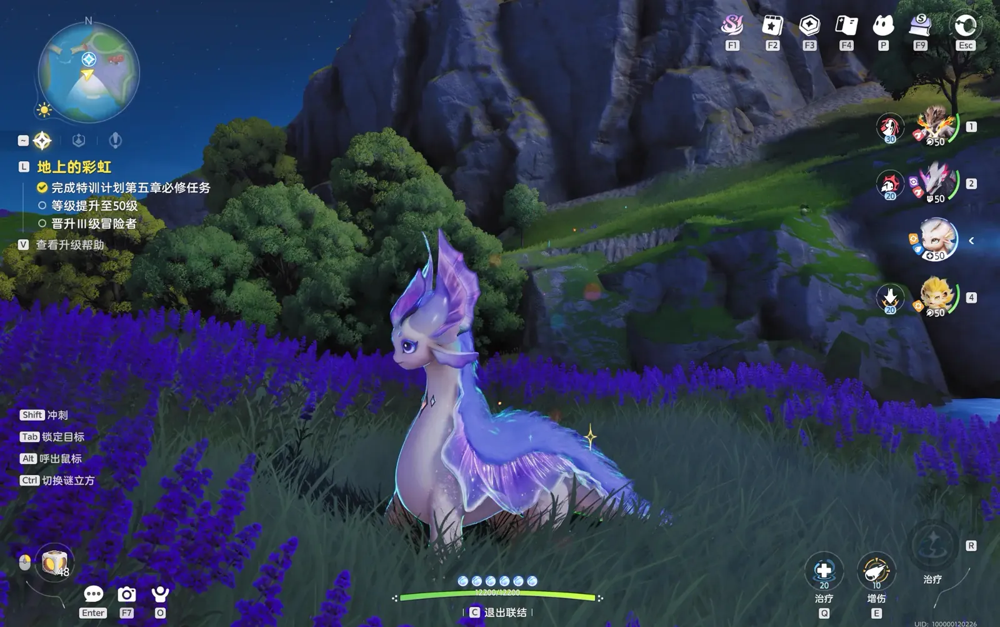
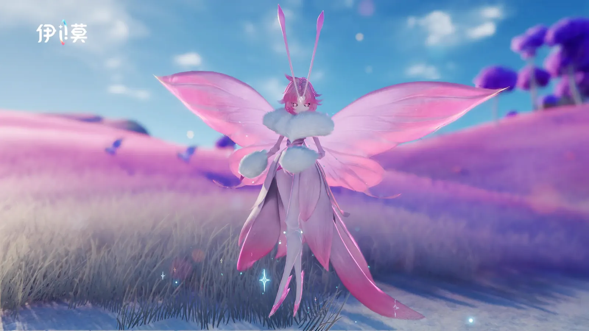

Home首页 / Guides攻略 / Aniimo Tier List: The 19 Creatures to Build First《伊莫》强度巅峰榜：几百小时之后，新手先练这 19 只
Checked核对于 October 9, 20262026 年 10 月 9 日
Aniimo Tier List: The 19 Creatures to Build First《伊莫》强度巅峰榜：几百小时之后，新手先练这 19 只
A personal tier list of 19 Aniimo, grouped by the job each one does — damage, break, healing and support, energy regen — with every element and role checked against the official wiki and the ranking left as my own.一份个人向的强度榜单，按输出、击破、治疗辅助、回能分成四组。每只都逐一对过官方维基的属性与定位，哪一段是能查的、哪一段是我自己的判断，文中分开写。
One thing is worth saying before the tiers. My four groups are close to the game's own role system: every creature the official wiki carries, I have placed where its official role puts it. There are exactly two exceptions. Healing and support are separate roles in this game and I have merged them into one group; and a single creature is filed in a group its official role would not put it in, called out where it appears.对完之后有一件事值得先说。我分的这四组，基本就是游戏自己的定位体系：官方维基里能查到的每一只，我都放在了官方定位会放的地方。只有两处例外。治疗和辅助在游戏里是两个分开的定位，我把它们合成了一组；另外还有一只，我把它放在了官方定位不会放它的那一段 —— 到那一段再讲。
T0 damage: four that stand side by sideT0 输出：并肩的四只
I pull the four strongest out on their own and call them equals, in no order between them. Three of the four can be looked up in the official record; their elements are Electric, Water and Fire.我把最强的四只单独拎出来，说它们「并肩」，彼此之间不分先后。四只里有三只能在官方表里查到，属性分别是电、水、火。
- Fulmintis — Electric · DPS. Named first.电刺螳螂（电 · 输出），我点名的第一个。
- Sherro — Water · DPS. Tied with Fulmintis, on a reason that runs to one line: it really is that strong.星骑士（水 · 输出），和电刺螳螂并列，我给的理由只有一句：「强度也是真的高」。
- Irisalis — a legendary-tier Aniimo, and one of the two names on this list that our own table does not carry. The last section says why.彩虹鸢尾，一只传说级的伊莫，也是本站总表里没有的两只之一。为什么，最后一段讲。
- Infergon — Fire · DPS. Fourth.炎铠龙（火 · 输出），排在第四。

T1 damage: five moreT1 输出：五只
Five more go into the damage group. All five carry the same official role, DPS, and between them they cover Dark, Fire, Ice and Grass.输出这一组，我补了五只。五只在官方表里的定位完全一致，全是输出；属性铺到了暗、火、冰、草。
- Pawney — Dark · DPS盔勇士（暗 · 输出）
- Scorchhowl — Fire · DPS. It shares an evolution line with Inferlupa in the break group: the main branch runs all the way to Scorchhowl, and Inferlupa forks off from the middle stage.狼斗士（火 · 输出）。它和击破那一组的狱魂狼同出一条进化线：主线一路走到狼斗士，狱魂狼是从中间那个节点分出去的。
- Glynsera — Ice · DPS霜锋狼（冰 · 输出）
- Ignitis — Dark · DPS淬刃螳螂（暗 · 输出）
- Thornblade — Grass · DPS刺剑玫（草 · 输出）

Break: four击破位：四只
The strongest breaker, I'd say, is plain: Inferlupa. The other three I wave through in a sentence. All four carry the same official role, Break, and their elements sit on Fire–Dark, Wind, Fire–Rock and Water.击破位最强的，我说得很干脆：「肯定是狱魂狼」。后面三只一句「其他的就不用多说了」带过。这一组四只的官方定位也全是击破，属性散在火暗、风、火土、水四边。
- Inferlupa — Fire · Dark · Break. First in this group.狱魂狼（火 · 暗 · 击破），这一组的第一。
- Helgon — Wind · Break银盔龙（风 · 击破）
- Magmarex — Fire · Rock · Break熔岩暴龙（火 · 土 · 击破）
- Panpanta — Water · Break胖胖獭（水 · 击破）

Healing and support: three治疗与辅助：三只
Heal and Support are two roles in this game; I count them as one group. Of the three, only Glacy is officially a Heal — the other two are officially Support.游戏里治疗和辅助是两个定位，我把它们算作一组。三只当中只有莹冰龙是官方的治疗，另外两只定位都是辅助。
- Glacy — Water · Ice · Heal. The strongest of this group, I'd say, and it is a short argument to make.莹冰龙（水 · 冰 · 治疗），这一组最强的，我说肯定是它，理由短到不用展开。
- Luminelle — Electric · Support吊灯水母（电 · 辅助）
- Dreaple — Dark · Support眠眠羊（暗 · 辅助）

Energy regen: three回能：三只
The last group is the one that keeps the rest of the party supplied with energy.最后一组管的是全队的能量供给。
- Somniwing美梦蝶
- Besauce — Electric · Regen贝瑟斯（电 · 回能）
- Gracewing — Wind · Heal. Officially a Heal; I file it under regen, and that is the one place in the whole list where a creature's official role and the job it is given here do not match. What an Aniimo is labelled and what it actually does in a party were never the same question.幻翼蝶（风 · 治疗）。官方给它的定位是治疗，我把它放进了回能。这是全场唯一一处对不上的地方。一只伊莫的官方定位，和它在队伍里实际负责的活，本来也不是一回事。

How to use this list新手怎么用
The list is grouped by job, so it is used by job: work out which slot your party is missing, then pick from that group. I put no further order on the 19 — the one place I draw a line is the four in T0.榜单是按位置分的组，用法也就按位置来：先想清楚队伍里缺哪一块，再去对应的那一组里挑。我没有给这 19 只排更细的先后，唯一分出层次的地方就是 T0 那四只。
Three things belong at the end.还有三件事得写在最后。
- This is one player's opinion — mine. A few hundred hours of feel is not a patch note, and the next balance pass makes this ordering out of date.这只是我一个人的看法。 几百小时的体感不是版本答案，游戏一改平衡，这份排序就会过期。
- Two names on the list are not among our 86. Irisalis and Somniwing. Our table follows the publisher's numbering — NO.001 to NO.082 plus five specially-numbered entries — and neither of them is on that index, so this site has no element and no role for them.我这份榜单上有两只不在总表的 86 只里，彩虹鸢尾和美梦蝶。总表跟的是官方维基的编号（NO.001–NO.082 加五个特殊编号），这两只还没进那张表，所以本站没有给它们属性和定位。
- Our own table carries a rating of its own, and it does not agree with mine. The clearest case is Sherro: I put it in T0, and our column gives it a D. Both of those are opinions, and neither of them is data.本站总表里另有一列我们自己给的评级，和我这份榜单并不一致。最明显的是星骑士：我把它放在 T0，总表那一列给的是 D。两边都是意见，不是数据。